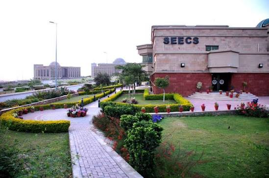

About Me

Hi, I am Ubaid — a first-year Data Science undergraduate at NUST SEECS. I have built end-to-end ML projects deployed on Streamlit, ranging from predicting jet engine failures to analysing Pakistan’s property market. I am a team player with a strong programming background in Python, Java, and C++. I am always looking to apply my skills in a professional or research setting.Education
National University of Sciences and Technology (NUST) — Islamabad, Pakistan
Bachelor of Science in Data Science — SEECS 2024 – Present
Relevant Coursework: Machine Learning (CS-245), Introduction to Data Science (DS-401), Object-Oriented Programming, Data Structures & Algorithms, Fundamentals of Computer Programming
Projects
| Project | Technologies | Key Result |
|---|---|---|
| Turbofan Engine RUL Prediction | Python, Keras, XGBoost, Streamlit | FD001 RMSE = 13.45, 5-tab dashboard deployed |
| Pakistan Property Price Predictor | Python, XGBoost, Playwright, Streamlit | Holdout R² = 0.87, 29,220 listings scraped |
| BloodScan AI | Python, scikit-learn, SVM, Streamlit | AUC 0.962, F1 0.893, 19 cell types classified |
| T20I Match Winner Prediction | Python, scikit-learn, XGBoost | 64.3% accuracy, AUC 0.715, 18 years of data |
| Hospital Management System | Java, JavaFX, MySQL | Full clinical GUI with PDF & email features |
| Basant 2026 Event Analysis | Python, NLP, Pandas | 147 records analysed, ~6% sentiment error rate |
| TicTacToe Game | C++, SFML | 3 grid sizes, 3 difficulty levels, multiplayer |